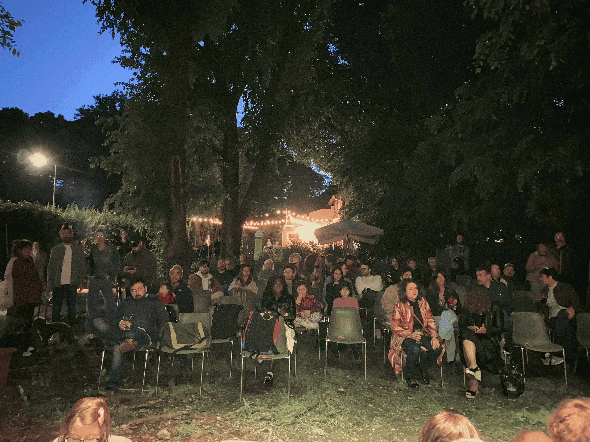
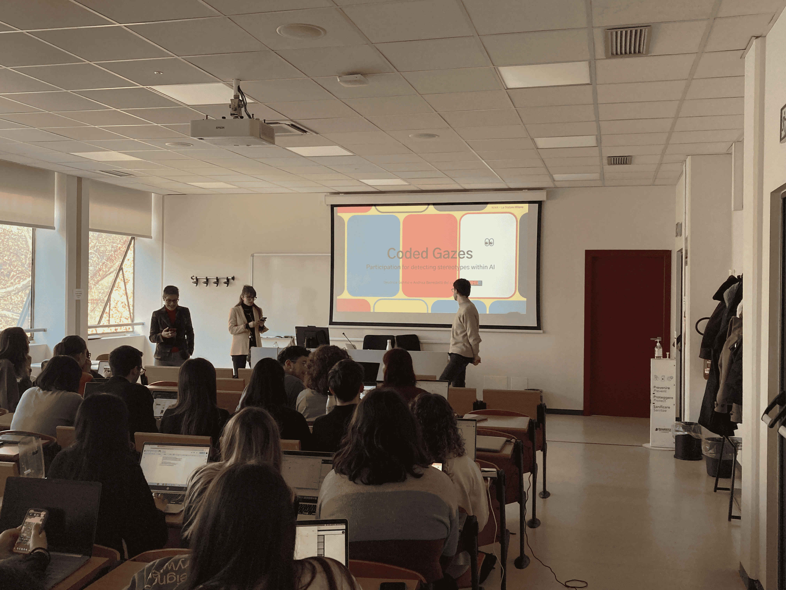

Negli ultimi due anni non siamo stati fermi. Abbiamo allargato i nostri orizzonti, tessuto relazioni vere con altre realtà civiche e movimenti che, come noi, credono che la politica si faccia con le persone.
Amicə
IppolitaPeriod think tank
Reclaim the tech
Reversing works
Mema
COSA FACCIAMO


Il nostro lavoro non è passato inosservato. Giornaliste e giornalisti, attiviste e attivisti, osservatrici e osservatori, voci indipendenti hanno scritto di noi, delle nostre battaglie e delle idee che portiamo avanti ogni giorno.
Su di noi
Intervista a Radio Contado - Radio ContadoInformazione, controllo, guerra. Tecnologie della vita e tecnologie della morte - Milano in movimento
Neither Intelligent, Nor Artificial - Technology blogger
Salut-AI, quando il diritto alla salute incontra gli algoritmi - Milano in Movimento
Il nostro desiderio è senza nome - Milano in Movimento
Nina festival 9-10 maggio - Zero
Nina festival 9-10 maggio - Milano in Movimento
Non calcolateci!”. Incomputabile di Alexander Galloway - Milano in Movimento
Audio per radio onda d'urto in occasione della presentazione di "Incomputabile"
Q code parla di Nina su RSI.ch
n.i.n.a. Né intelligente, né artificiale - QCode
La guerra e l’AI: il paradigma della Palestina - Milano in Movimento
Audio per Radio Popolare
L’intelligenza artificiale: l'innovazione del dispositivo di dominio capitalista - Arcipelago Milano
I venti passi di Nina - Effimera
Speciale "le conseguenze dell'AI" - Milano in Movimento
Chi è N.i.n.a.? - Milano in Movimento
ARCHIVIO AUDIO
Partecipazioni (primi due anni)
Visionaria 2025IA e società - 22 maggio - municipio IV - ore 18
Ecorà - Locandina
Intelligenza artificiale - potere o sapere? -Locandina
Welcome Nina Roma - 6 marzo [at La Strada]
Presentazione Nina Bergamo - 27 marzo [at Pacì Paciana] - flyer 2
Coded Gazes - seminario a Scienze politiche - Presentazione > > Locandina
Ciclo di incontri sulla Comunicazione Scientifica - Unimi
Reclaim the tech 2024
Visionaria 2024 - Repubblica
Quattro incontri sulla ricerca - La statale news
AI un viaggio nel cuore della tecnologia del futuro - Presso Camera del lavoro di Milano
ARCHIVIO LINKS